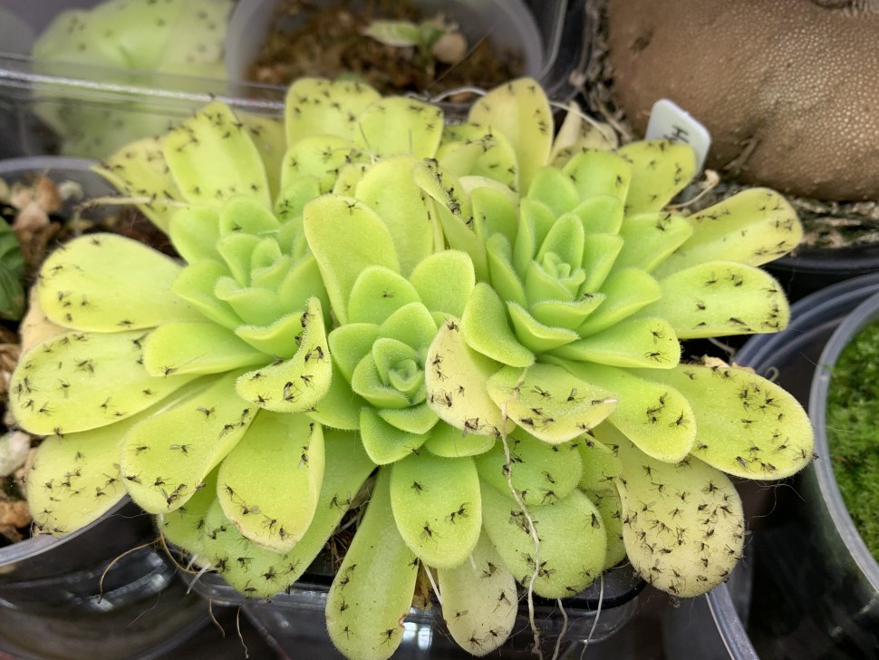

Butterwrot
Butterwort plants (Pinguicula) are tiny plants that can go unrecognized until they bloom. The leaves are a soft greenish yellow color, which probably led to the name. It could also be from the slightly greasy or buttery feel of the leaves. The plant forms low rosettes and blooms in spring with yellow, pink, purple, or white flowers. carnivorous butterworts like alkaline soil where nutrients are poor and the site is warm and moist to boggy (as with many types of carnivorous plants). The plant’s leaves have a coating of an insect-trapping resin. The prey of choice for these tiny plants is gnats, which give up valuable nitrogen for the plant to use.
Here are some facts about Butterwrot!
| Name | Butterwrot |
| Botanical name | Pinguicula moranensis |
| Heigth | NA |
| Kingdom | Plantae |
| Conservation status | Threatened or Endangered |
| Environment | They are typically located in regions where water is least seasonally plentiful, as too damp soil conditions can lead to rotting. They are found in areas in which nitrogenous resources are known to be in low levels, infrequent or unavailable, due to acidic soil conditions |
| Habitat | North and South America,Europe and Northern Asia |
| Live Specimens | NA |
| Australia is the only continent without any native butterworts. Butterworts probably originated in Central America, as this is the center of Pinguicula diversity – roughly 50% of butterwort species are found here. | |
| Check out the wikipedia page here! | |